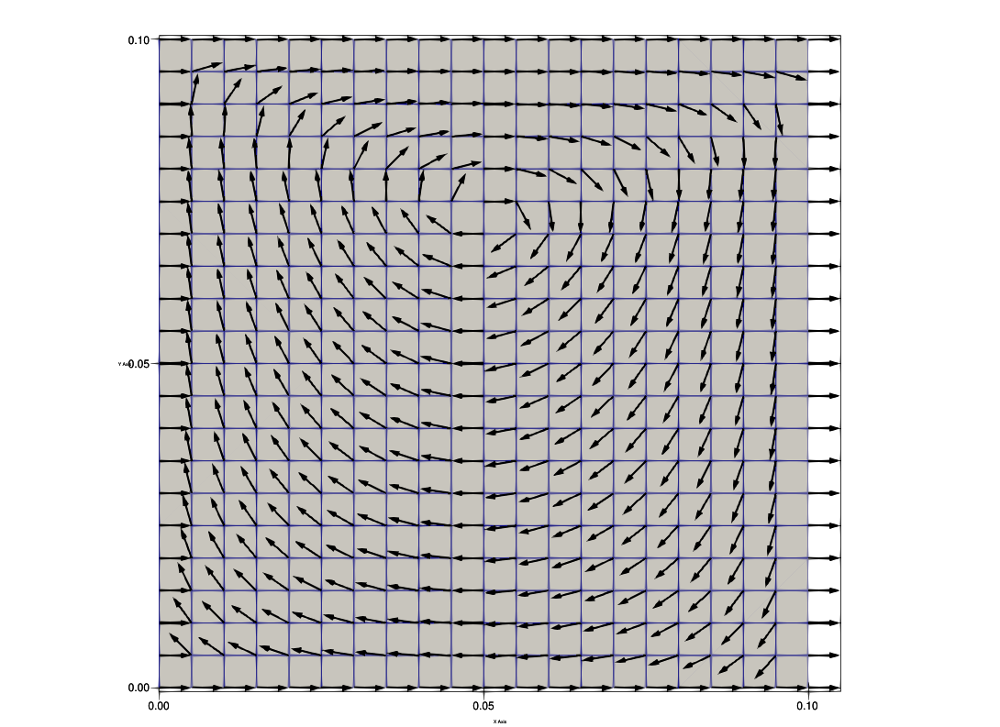
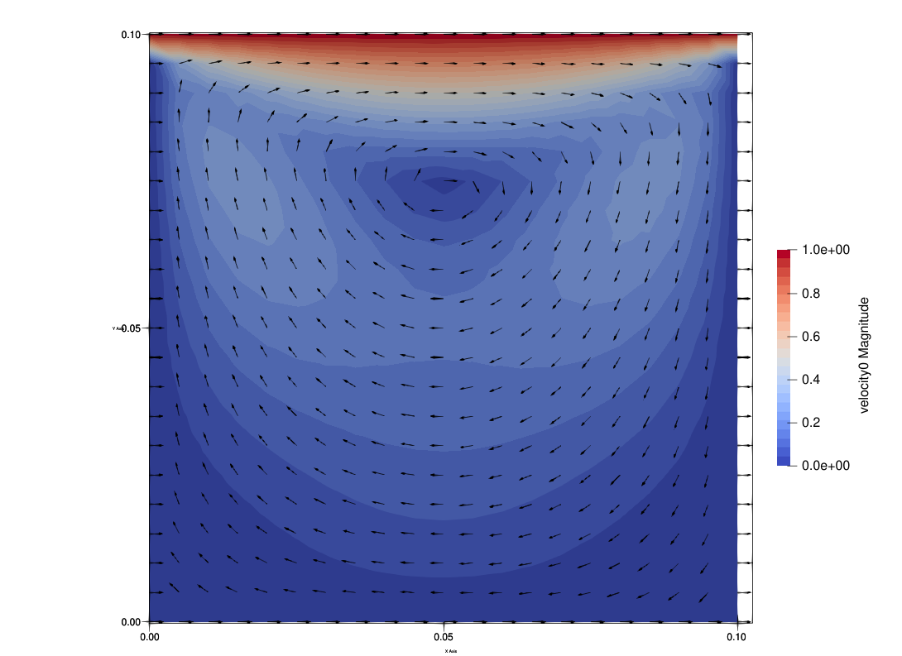

Governing equation
\[ \nabla p-\nabla\cdot\tau-\rho\mathbf{b}=\mathbf{0}, \]
\[ \nabla\cdot\mathbf{v}=0 \]
\[ -p{\bf n}+\tau\cdot{\bf n}={\bf h}\text{ on }\Gamma_{h} \]
\[ \tau=2\mu\mathbf{d}(\mathbf{v}) \]
\[ d_{ij}=\frac{1}{2}\left(\frac{\partial v_{i}}{\partial x_{j}}+\frac{\partial v_{j}}{\partial x_{i}}\right) \]
SteadyStokes111 Kernel in EASIFEM
Declare some variables
#define _VTOP_ 1.0_DFP
#define _MU_FLUID_ 0.01
#define _RHO_FLUID_ 1.0
#define _tDBC4P_ 1
#define _REF_PRESSURE_NODE_ 90
#define _STAB_PARAM_OPTION_ 1
PROGRAM main
USE easifemBase
USE easifemClasses
USE easifemMaterials
USE easifemKernels
USE SteadyStokes111_Class
IMPLICIT NONE
!!
!!
!!
TYPE(SteadyStokes111_) :: obj
TYPE(ParameterList_) :: param
TYPE(HDF5File_) :: domainFile
TYPE( HDF5File_ ) :: outputfile
TYPE( VTKFile_ ) :: vtk_outputfile
TYPE(MeshSelection_) :: region
TYPE(Domain_), TARGET :: dom
CLASS(DirichletBC_), POINTER :: dbc => NULL()
CHARACTER(LEN=*), PARAMETER :: domainFileName = "./mesh.h5"
CHARACTER( LEN = * ), PARAMETER :: outputfilePrefix="./output"
!!
!! LinSolver
!!
INTEGER(I4B), PARAMETER :: LinSolver_name = LIS_GMRES
INTEGER(I4B), PARAMETER :: KrylovSubspaceSize = 50
INTEGER(I4B), PARAMETER :: maxIter_LinSolver = -1
REAL(DFP), PARAMETER :: rtol_LinSolver=1.0D-6
REAL(DFP), PARAMETER :: atol_LinSolver=1.0D-10
INTEGER(I4B), PARAMETER :: preconditionOption = NO_PRECONDITION
INTEGER(I4B), PARAMETER :: convergenceIn_LinSolver = convergenceInRes
INTEGER(I4B), PARAMETER :: convergenceType_LinSolver = relativeConvergence
LOGICAL( LGT ), PARAMETER :: relativeToRHS = .FALSE.
!!
!! Iteration parameter
!!
INTEGER( I4B ), PARAMETER :: stabParamOption = _STAB_PARAM_OPTION_
LOGICAL( LGT ), PARAMETER :: resetIteration = .TRUE.
LOGICAL( LGT ), PARAMETER :: resetTimeStep = .TRUE.
INTEGER( I4B ), PARAMETER :: postProcessOpt = 1
!!
!! material and boundary condition
!!
INTEGER(I4B), PARAMETER :: tFluidMaterials = 1
INTEGER(I4B), PARAMETER :: tDirichletBCForVelocity = 3
INTEGER(I4B), PARAMETER :: tDirichletBCForPressure = _tDBC4P_
INTEGER( I4B ), PARAMETER :: refPressureNode = _REF_PRESSURE_NODE_
REAL(DFP), PARAMETER :: massdensity_fluid= _RHO_FLUID_
REAL(DFP), PARAMETER :: dynamicViscosity= _MU_FLUID_
REAL(DFP), PARAMETER :: V_TOP= _VTOP_
INTEGER( I4B ) :: debugNo = 0Preprocessing
!!
!! main
!!
CALL FPL_INIT(); CALL param%Initiate()
!!
!! Set SteadyStokes111 Param
!!
CALL SetSteadyStokes111Param( &
& param=param, &
& domainFile=domainFileName, &
& stabParamOption=stabParamOption, &
& tFluidMaterials=tFluidMaterials, &
& tDirichletBCForVelocity=tDirichletBCForVelocity, &
& tDirichletBCForPressure=tDirichletBCForPressure, &
& postProcessOpt = postProcessOpt )
!!
!! Set linear solver param
!!
CALL SetLinSolverParam( &
& param=param, &
& solverName=LinSolver_name,&
& preconditionOption=preconditionOption, &
& convergenceIn=convergenceIn_LinSolver, &
& convergenceType=convergenceType_LinSolver, &
& maxIter=maxIter_LinSolver, &
& relativeToRHS=relativeToRHS, &
& KrylovSubspaceSize=KrylovSubspaceSize, &
& rtol=rtol_LinSolver, &
& atol=atol_LinSolver )
!!
!! Domain for pressure and velocity field
!!
CALL domainFile%Initiate( filename=domainFileName, MODE="READ")
CALL domainFile%Open()
CALL dom%Initiate(domainFile, "")
CALL domainFile%Deallocate()
!!
!! Initiate the SteadyStokes111 Solver
!!
CALL obj%Initiate(param=param, dom=dom)
!!
!! Add Fluid Material
!!
CALL region%Initiate(isSelectionByMeshID=.TRUE.)
CALL region%Add(dim=obj%nsd, meshID=[1,2])
!!
CALL SetFluidMaterialParam( &
& param=param, &
& name="fluidMaterial", &
& massDensity=massdensity_fluid, &
& dynamicViscosity=dynamicViscosity, &
& stressStrainModel="NewtonianFluidModel" )
CALL SetNewtonianFluidModelParam( &
& param = param, &
& dynamicViscosity = dynamicViscosity )
!!
CALL obj%AddFluidMaterial( &
& materialNo=1, &
& materialName="fluidMaterial", &
& param=param, &
& region=region )
!!
CALL region%Deallocate()
!!
!! DirichletBC Vx=0
!!
CALL SetDirichletBCParam( &
& param=param, &
& name="Vx=0", &
& idof=1, &
& nodalValueType=Constant, &
& useFunction=.FALSE.)
CALL region%Initiate( &
& isSelectionByMeshID=.TRUE., &
& isSelectionByNodeNum=.TRUE. )
CALL region%Add(dim=obj%nsd-1, meshID=[1,2,6])
CALL region%Add( &
& nodenum=dom%getInternalNptrs( dim=obj%nsd-1, entityNum=[3,5] ) )
CALL region%Set()
!!
CALL obj%AddVelocityDirichletBC(dbcNo=1, param=param, boundary=region)
CALL region%Deallocate()
dbc => obj%GetVelocityDirichletBCPointer(dbcNo=1)
CALL dbc%Set(ConstantNodalValue=0.0_DFP)
dbc => NULL()
!!
!! DirichletBC Vy=0
!!
CALL SetDirichletBCParam( &
& param=param, &
& name="Vy=0", &
& idof=2, &
& nodalValueType=Constant, &
& useFunction=.FALSE.)
!!
CALL region%Initiate(isSelectionByMeshID=.TRUE.)
CALL region%Add(dim=obj%nsd-1, meshID=[1,2,3,4,5,6])
CALL region%Set()
!!
CALL obj%AddVelocityDirichletBC(dbcNo=2, param=param, boundary=region)
CALL region%Deallocate()
dbc => obj%GetVelocityDirichletBCPointer(dbcNo=2)
CALL dbc%Set(ConstantNodalValue=0.0_DFP)
dbc => NULL()
!!
!! DirichletBC Vx=Vtop
!!
CALL SetDirichletBCParam( &
& param=param, &
& name="Vx=V", &
& idof=1, &
& nodalValueType=Constant, &
& useFunction=.FALSE.)
!!
CALL region%Initiate(isSelectionByMeshID=.TRUE.)
CALL region%Add(dim=obj%nsd-1, meshID=[4])
CALL region%Set()
!!
CALL obj%AddVelocityDirichletBC(dbcNo=3, param=param, boundary=region)
CALL region%Deallocate()
dbc => obj%GetVelocityDirichletBCPointer(dbcNo=3)
CALL dbc%Set(ConstantNodalValue=V_TOP)
dbc => NULL()
!!
!! DirichletBC P=0
!!
IF( tDirichletBCForPressure .GT. 0 ) THEN
CALL SetDirichletBCParam( &
& param=param, &
& name="P=0", &
& idof=1, &
& nodalValueType=Constant, &
& useFunction=.FALSE.)
CALL region%Initiate( &
& isSelectionByNodeNum=.TRUE. )
CALL region%Add( nodenum=[refPressureNode])
CALL region%Set()
!!
CALL obj%AddPressureDirichletBC(dbcNo=1, param=param, boundary=region)
CALL region%Deallocate()
dbc => obj%GetPressureDirichletBCPointer(dbcNo=1)
CALL dbc%Set(ConstantNodalValue=0.0_DFP)
dbc => NULL()
END IFNow we are done with preprocessing, let us call set
CALL obj%Set( )
CALL outputfile%Initiate(outputfilePrefix//'.h5', "NEW")
CALL outputfile%Open()
CALL obj%Display( "obj: " )Processing
CALL obj%run( param )Postprocessing
CALL obj%WriteData(outputfile, "" )
CALL obj%WriteData(vtk_outputfile, "" )Cleanup
CALL outputfile%Deallocate()
CALL obj%Deallocate()
CALL dom%Deallocate()
CALL param%Deallocate(); CALL FPL_FINALIZE()Results
Velocity results:

